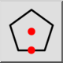
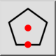
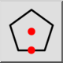
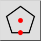

Poligono (centro, lato)
Barra degli strumenti / Icona:
 

Menù: Disegna > Forma > Poligono (centro, lato)
Scorciatoia: P, G, 3
Comandi: polygoncs | pg3
Questa è una traduzione automatica.
Barra degli strumenti / Icona:
 

Menù: Disegna > Forma > Poligono (centro, lato)
Scorciatoia: P, G, 3
Comandi: polygoncs | pg3
Crea poligoni con il punto centrale e centrale di un lato.